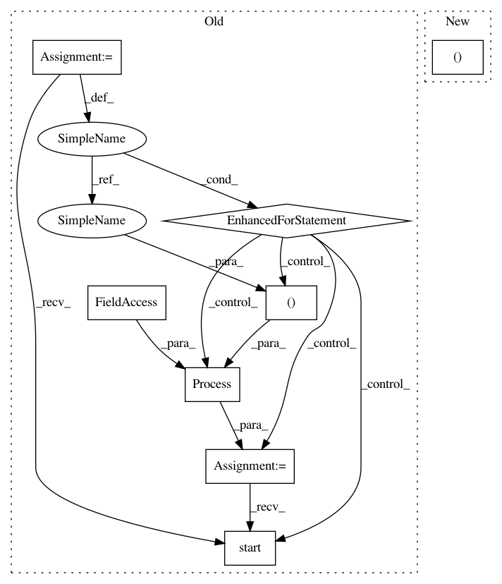

8442321b9b7a7cef7e3806b525965c36cea1549e,examples/60_search/example_parallel_manual_spawning.py,,,#,97
Before Change
processes = []
spawn_classifier = get_spawn_classifier(X_train, y_train)
for i in range(4): // set this at roughly half of your cores
p = multiprocessing.Process(
target=spawn_classifier,
args=(i, "breast_cancer"),
)
p.start()
processes.append(p)
for p in processes:
p.join()
print("Starting to build an ensemble!")
After Change
process_python_worker.start()
process_cli_worker = multiprocessing.Process(
target=start_cli_worker,
args=(cluster.scheduler_address,),
)
process_cli_worker.start()
In pattern: SUPERPATTERN
Frequency: 3
Non-data size: 8
Instances
Project Name: automl/auto-sklearn
Commit Name: 8442321b9b7a7cef7e3806b525965c36cea1549e
Time: 2020-09-25
Author: feurerm@informatik.uni-freiburg.de
File Name: examples/60_search/example_parallel_manual_spawning.py
Class Name:
Method Name:
Project Name: automl/auto-sklearn
Commit Name: 8442321b9b7a7cef7e3806b525965c36cea1549e
Time: 2020-09-25
Author: feurerm@informatik.uni-freiburg.de
File Name: examples/60_search/example_parallel_manual_spawning.py
Class Name:
Method Name:
Project Name: tensorflow/benchmarks
Commit Name: 449e900ef018a775f2827dd3e591900c761004ab
Time: 2020-06-16
Author: 53017143+sganeshb@users.noreply.github.com
File Name: perfzero/lib/benchmark.py
Class Name: BenchmarkRunner
Method Name: run_benchmark
Project Name: pytorch/fairseq
Commit Name: cfbf0dddbc2f06b4d2975655a3959d13e5ba6667
Time: 2021-01-21
Author: myleott@fb.com
File Name: tests/test_bmuf.py
Class Name: TestBMUF
Method Name: bmuf_process